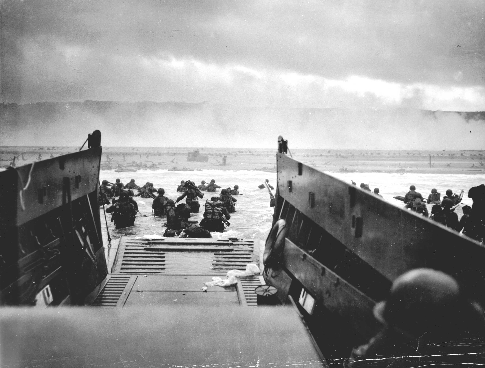
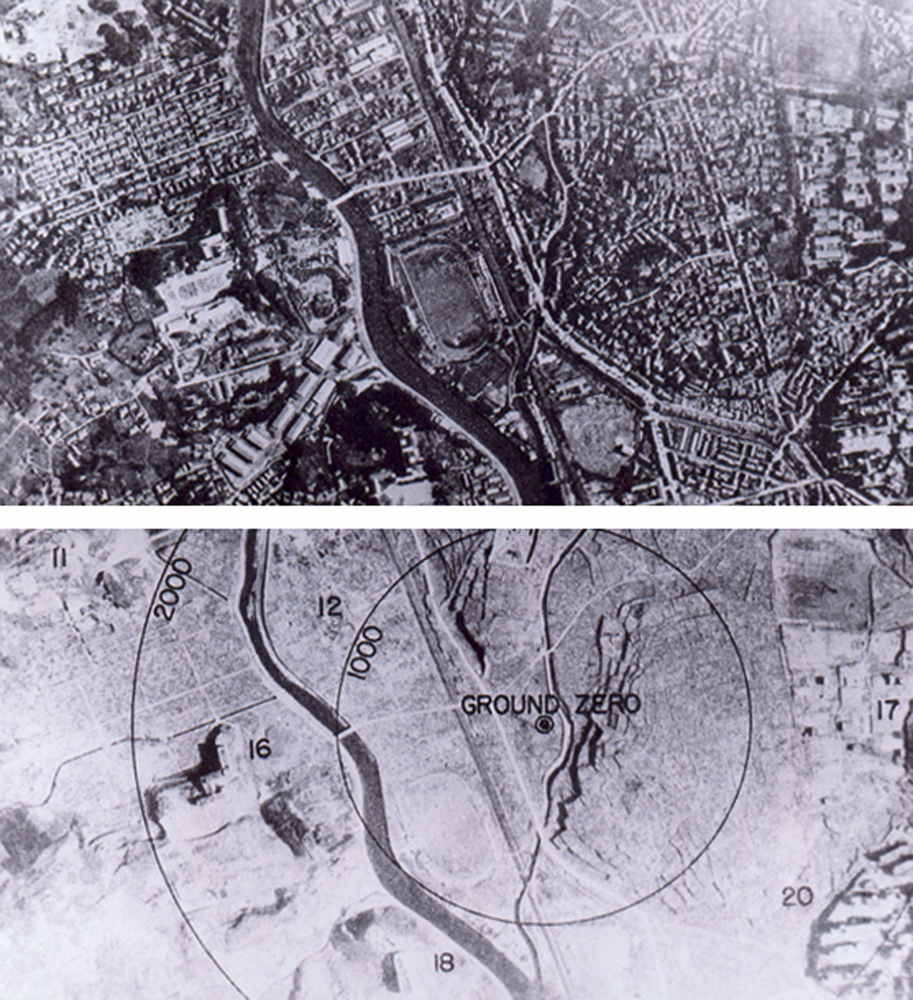

Explore key events that shaped the world we live in today.
World War II, fought from 1939 to 1945, was a global conflict between the Allies (including the United States, the Soviet Union, and the United Kingdom) and the Axis Powers (led by Germany, Italy, and Japan). The war resulted in massive destruction, the use of atomic bombs on Japan, and ultimately led to the creation of the United Nations to prevent future global conflicts.
On June 6, 1944, Allied forces launched a massive amphibious invasion on the beaches of Normandy, France. Marking a turning point in the war and leading to the liberation of Western Europe from German control.
The United States dropped atomic bombs on these Japanese cities in August 1945, leading to Japan’s surrender and the end of World War II.
